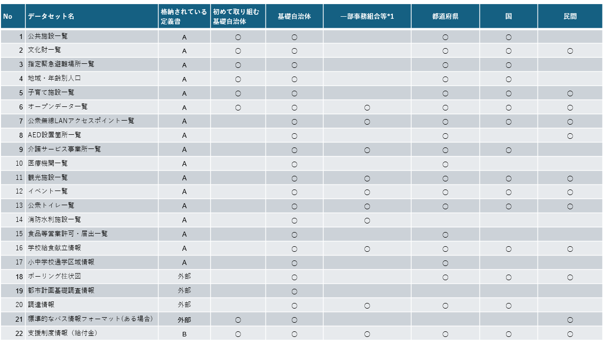

第2回 オープンデータの基本¶
「オープンデータ」がテーマです。オープンデータとは何なのかについて学びます
🎯 本日の到達目標¶
オープンデータ（Open Data）の社会的背景、および市民がIT技術を用いて社会課題を解決する**「シビックテック（Civic Tech）」**の意義を説明できる。
クリエイティブ・コモンズ（CC）ライセンスの4つの基本マーク（BY, NC, ND, SA）を理解し、データの二次利用ルールを遵守できる。
シビックテックとは何かを理解する
オープンデータとは何か？（概念と社会的意義）¶
オープンデータとは¶
出典： http://opendefinition.org/
オープンデータ（Open Data）とは、自由に使えて再利用もでき、かつ誰でも再配布できるようなデータのこと。従うべきはせいぜい「作者のクレジットを残す」「同条件で配布する」程度。
オープンなライセンス
オープンなアクセス
複製のための適切な費用以上の価格が課せられてはならず、インターネットを通じ無償ダウンロード可能であることが望まれる
オープンな形式
更新可能で簡便な形式、機械判読・一括利用が可能
利用に制限や料金がかからず、自由に公開利用可能
単に「公表されたデータ」ではなく、「開放資料」であること。
Open Definition 2.0 by Open Knowledge CC-BY4.0
オープンデータとは、国や地方公共団体などが保有するデータを、営利・非営利を問わず、誰もが自由に利用（加工、編集、再配布など）できるように公開する取り組みのこと。具体的には、機械判読に適した形式で、インターネットを通じて公開されれているデータです．
オープンデータの主な特徴:¶
機械判読に適していること: コンピュータが自動で読み込んで処理できる形式（CSV, JSON, XMLなど。PDFや画像は「機械判読が難しい」とされます）。
無償で利用できること: 誰でも無料で利用可能であること
二次利用（再配布、加工、営利利用など）が可能であること: 公開されたデータを自由に二次利用（加工、編集、再配布など）できること
身近なものに例えると、**「公園の井戸水」**のようなものです。
クローズドデータ（従来のデータ）: カフェの「秘伝のレシピ」。関係者以外は見ることすらできない。
シェアードデータ（共有データ）: メンバー限定の「会員制サロン」。お金を払うか会員になれば使える。
オープンデータ: 「公園の井戸水」。誰もが自由に行って、タダで飲めて、料理（加工）に使って、他人に配っても問題ない。
【 クローズドデータ 】 【 シェアードデータ 】 【 オープンデータ 】
┌───────────────┐ ┌───────────────┐ ┌───────────────┐
│ 🔒 秘伝のレシピ│ ───▶ │ 🔑 会員限定 │ ───▶ │ ⛲ 公園の井戸 │
│ (関係者外秘) │ │ (契約者のみ) │ │ (誰でも自由) │
└───────────────┘ └───────────────┘ └───────────────┘
オープンデータの活用事例:¶
公共交通機関の運行状況の可視化
オープンデータとして公開されている運行情報を活用し、バスや電車の遅延情報などをリアルタイムで提供するサービスが実現されている
防災情報の提供
気象データや避難場所情報をオープンデータとして公開することで、災害時の情報提供や避難行動を支援するサービスが提供されている
地域情報の可視化
地域の人口統計や施設情報などをオープンデータとして公開することで、地域課題の解決や活性化に役立てられている
オープンデータの意義・目的:¶
なぜ国や自治体はデータを「無料」で公開するのか？
「苦労して集めたデータを無償で公開するなんて、行政にとって損ではないか？」と思うかもしれません。しかし、これには非常に大きな社会的メリットがあります。
行政の透明性・信頼性の向上（オープンガバメント）
行政の高度化・効率化。オープンデータは、国民が政策形成や地域課題の解決に参画する機会を増やし、官民が連携してより良い社会を構築するのに役立つ 国民参加・官民協働の推進。税金がどのように使われているか（予算データ）、地域の犯罪発生状況（治安データ）などを市民にガラス張りにすることで、行政への信頼が高まります。 行政機関は、オープンデータを通じて、より効率的で透明性の高い行政運営を目指すことができる新ビジネスの創出と経済活性化
経済の活性化。オープンデータを活用することで、新たなビジネスチャンスが生まれ、経済の活性化につながることが期待される 民間企業やベンチャーが、公開された「気象データ」や「バスの運行データ」を使って、独自の天気予報アプリや乗換案内サービスを開発し、新しい産業や雇用が生まれます。シビックテック（Civic Tech）による社会課題解決
行政だけで地域のあらゆる課題（少子高齢化、防災、ゴミ問題など）を解決するのは限界があります。そこで、市民やプログラマー自身がIT技術とオープンデータを用いて、ボランティアで解決策を生み出す活動が世界中で活発になっています。これを シビックテック（市民＝Civic ＋ 技術＝Tech） と呼びます。
オープンデータのライセンスとルール¶
「自由に二次利用できる」といっても、完全に逆らう行為（ルール違反）は許されません。「著作者が誰かを書いてほしい」「勝手にアレンジして変なデータにしないでほしい」といった最低限のルールが必要です。 このルールを世界中で標準化したのが、クリエイティブ・コモンズ（Creative Commons: CC）ライセンスです。
クリエイティブ・コモンズ・ライセンスについて (https://creativecommons.jp/licenses/)
オープンデータは、以下のクリエイティブ・コモンズ・ライセンスの組み合わせによって、利用条件（ライセンス）が示されていることが多いです。
クリエイティブ・コモンズ・ライセンスの代表的なライセンス¶
| 略称 | 正式名称 | 意味 | ライセンス内容 |
|---|---|---|---|
| CC BY | 表示 (Attribution) | 「名前を表示すること」 | データの作者（自治体名など）と出典を明記すれば、自由に加工・配布してよい。 |
| CC BY NC | 非営利 (Non-Commercial) | 「お金儲けに使わないこと」 | 営利目的（有料アプリでの使用や、データの販売など）に使ってはいけない。 |
| CC BY ND | 改変禁止 (No-Derivatives) | 「そのまま使うこと」 | データを一切加工（書き換え・フィルタリング等）せず、オリジナルのままで配布すること。 |
| CC BY SA | 継承 (Share-Alike) | 「同じルールを継承すること」 | データを加工して作った新しいデータにも、元と同じCCライセンスを適用して公開すること。 |
CC-BY: 最も使いやすいライセンスです。出典さえ書けば、ビジネスに使っても、データを加工しても自由です。
CC-0 (Creative Commons Zero): すべての権利を放棄した「完全なパブリックドメイン」です。出典すら書かずに、完全に自由に使えます。


シビックテック（Civic Tech）とは何か？¶
近年、データ分析やアプリ開発の教育・実務において注目されているムーブメントが、**「シビックテック（Civic Tech）」**です。シビックテックは、オープンデータの普及・活用とともに発展してきました。
Civic (市民の、市民による) ＋ Technology (テクノロジー)
===============================================================
▶ 市民が自らの手で、ITやデータを使って、地域の課題を解決する！
かつて、地域の課題（「ここの避難所が分かりにくい」「ゴミの分別が複雑」「子育ての 支援制度が調べづらい」など）は、「行政に苦情を言って、税金で解決してもらうのを待つ」のが当たり前でした。
しかし、ITツールが安価になり、プログラミングやデータ分析が民主化された現代では、**「自分たちの街の課題は、自分たちのデータスキルとITツールで、今すぐボランティアで解決してしまおう！」**という自発的な活動が生まれました。これがシビックテックです。
世界と日本の代表的なシビックテック組織¶
シビックテックは、世界的なつながりを持つオープンなコミュニティ活動です。
Code for America (コード・フォー・アメリカ)
2009年にアメリカで設立された、シビックテックの世界的先駆者です。「政府のITをより良くする」ことを目標に、市民エンジニアが行政機関に1年間派遣され、行政システムのUI/UX改善や、貧困支援フードスタンプの申請アプリなどを開発しました。
Code for Japan (コード・フォー・ジャパン)
2013年に日本で設立された、日本最大のシビックテックネットワークです。「ともに考え、ともにつくる」を合言葉に、全国各地に「Code for 〇〇」（例：Code for Kanazawaなど）と呼ばれる、その地域に特化した自発的なコミュニティが約100団体以上存在しています。
その他のシビックテック団体
Code for 以外にも，様々なコミュニティや団体がシビックテック活動をしています．（例：シビックテックジャパン、オープン川崎など）
社会課題解決の具体例¶
シビックテックが世の中にどれだけ大きな影響を与えてきたか、有名な3つの事例を紹介します。
東京都新型コロナウイルス感染症対策サイト¶
2020年3月、感染が拡大する中で、東京都の委託を受けた Code for Japan のメンバーや市民エンジニアたちが、わずか数日で公開したWebサイトです。
[ 👥 市民エンジニア ] ──▶ [ 🌐 GitHubでコードを完全公開 ] ──▶ [ 🌍 世界中の有志が参加 ]
│
▼ (改善案の投稿)
[ 🇹🇼 台湾・オードリー・タン氏も参加！]
注目ポイント: サイトのプログラムコードをインターネット上の公開共有サイト（GitHub）に丸ごと公開しました。これにより、日本中、さらには台湾のデジタル大臣であったオードリー・タン（Audrey Tang）氏などの世界的なプログラマーたちまでもがボランティアとしてサイトの不具合修正や翻訳機能の追加に参加しました。
水平展開（オープンソースの力）: この東京都のサイトのデザインや仕組みは「他の自治体でも自由に使って良い」と公開されていたため、数日のうちに全国47都道府県の有志がコードをコピーし、そっくりそのままの「〇〇県コロナ対策サイト」を瞬時に立ち上げました。これこそが、プログラムをオープンにすることの真価です。そして海外（台湾など）にも同様なサイトが立ち上がりました。
sinsai.info（東日本大震災時の復興支援プラットフォーム）¶
2011年3月11日の東日本大震災発生から、わずか「4時間後」に有志の市民プログラマーたちが立ち上げた情報共有マップです。
役割: 行政の公式発表が追いつかない極限状態の中、「どこに給水車がいるか」「どこで物資が不足しているか」「どの道路が通行可能か」といった現地の細かな情報を、市民からのツイートや投稿をもとに地図上にマッピングし、可視化しました。被災地の生命線となり、のちの国や自治体のオープンデータ推進への大きなきっかけとなりました。
文系学生がシビックテックに参加する意義¶
「私はプログラムを完璧に書けないから、シビックテックには参加できないな…」と思うかもしれません。 それは大きな誤解です！
シビックテックプロジェクトは、プログラマーだけで開発すると「技術はすごいけれど、一般の市民には使いにくくて優しくないアプリ」になりがちです。 そのため、以下のような多様なスキルを持つ人の参加が、プログラマー以上に強く求められています。
「課題の発見者」: 地域の高齢者、お母さん、若者が、普段どんな不便を感じているかを言葉にして伝える役割。
「デザイナー・ライター」: アプリの文字を読みやすくしたり、色使いを優しくしたり、説明文を書く役割。
「データお掃除係」: 今回の授業で学ぶように、行政が公開したバラバラで汚いエクセルデータを、Pandasなどを使って綺麗に整形する役割。
「広報・翻訳」: 完成した便利なツールを、SNSで地域に広めたり、海外の方に伝える役割。
生成AIの誕生により誰でもアプリが作成することが可能となってきました。
ぜひ、「自分にも社会の役に立つITツールが作れるんだ」という意識を持って、データ分析とGIS・Webアプリ開発に取り組んでみてください
オープンデータのカタログ¶
代表的な「オープンデータ」を公開しているサイトです。
自治体標準オープンデータセットの対象となる組織¶
{kind=link}

*1 一部事務組合等(広域連合など含む)については様々な連携ケースが存在しているため、総務省で想定している広域行政を参考に選択している。https://www.soumu.go.jp/main_content/000658630.pdf
国・自治体¶
データカタログ¶
サービス¶
公的機関・その他¶
データカタログ¶
サービス¶
地理空間系¶
データカタログ¶
民間¶
サービス¶
国・自治体関連情報¶
関連情報¶
解説¶
Pythonでインターネット上のデータを直接読み込もう¶
実際にPythonで動かしてみます． これまでは、パソコンにあるCSVファイルをGoogle Colabの左側のメニューからアップロードして読み込んでいました。 Pandasを使えば、インターネット上の公開URLを直接指定して、一瞬でデータを読み込むことができます。
サンプルデータ: shelter_sample_xx.csv¶
学習用に東京都杉並区をモデルにした「模擬避難所データ（ダミーデータ）」です。（実データではありません）
データファイルの内容は同じですが，文字コードが異なります。
shelter_sample_utf8.csv (UTF-8)
shelter_sample_sjis.csv (Shift-JIS)
項目(カラム)の意味
Shelter_Name：避難所名（「中央小学校体育館」など）
District：地区名（「桃井」「高井戸」など）
Latitude / Longitude：緯度・経度の位置情報
Is_Seismic：耐震性の有無
Has_AED：AED設置の有無
Food_Stock：備蓄食料の数
実践：Web上のCSVを読み込む¶
サーバー上に用意された「模擬避難所データ」を読み込んでみましょう。
import pandas as pd
# インターネット上のCSVファイルのURL
data_url = "https://raw.githubusercontent.com/homata/musashiuniv/master/data/shelter_sample_utf8.csv"
try:
df_shelter = pd.read_csv(data_url)
print("インターネットからのデータの読み込みに成功しました！")
print(f"データの件数: {len(df_shelter)} 行")
# 先頭の3行を表示して確認
display(df_shelter.head(3))
except Exception as e:
print("インターネットからの直接読込に失敗しました。オフライン環境、もしくはURL変更の可能性があります。")
print("代替手段として、ローカルに疑似データを作成して読み込みを行います。")
# 接続に失敗した場合の自動フォールバック（バックアップデータ生成）
backup_data = {
"Shelter_Name": ["中央小学校体育館", "東市民センター", "西公園野球場", "桃井第二小学校", "荻窪中学校", "高井戸小学校", "宮前体育館", "成田西子供園", "松庵小学校", "久我山中央公園"],
"District": ["桃井", "高井戸", "荻窪", "桃井", "荻窪", "高井戸", "高井戸", "荻窪", "高井戸", "高井戸"],
"Latitude": [35.708, 35.683, 35.701, 35.711, 35.703, 35.681, 35.685, 35.694, 35.676, 35.679],
"Longitude": [139.615, 139.612, 139.622, 139.609, 139.618, 139.616, 139.602, 139.627, 139.598, 139.605],
"Is_Seismic": ["あり", "あり", "なし", "あり", "あり", "あり", "なし", "あり", "あり", "なし"],
"Has_AED": ["あり", "なし", "あり", "あり", "あり", "なし", "なし", "あり", "なし", "あり"],
"Food_Stock": [1500, 2000, 500, 3000, 2500, 1800, 0, 1200, 1500, 400]
}
df_shelter = pd.DataFrame(backup_data)
print(f"バックアップデータの生成完了: {len(df_shelter)} 行")
display(df_shelter.head(3))
日本の行政データ最大の罠：文字コードエラー（Shift-JIS）を突破する¶
日本の官公庁や地方自治体が公開しているCSVファイルを、上記のように普通に読み込もうとすると、非常によく以下のような赤いエラーメッセージが表示されます。
UnicodeDecodeError: 'utf-8' codec can't decode byte ...
【エラーの原因】
Python（Pandas）は、標準で世界共通の文字コードである 「UTF-8」 でファイルを開こうとします。
Microsoft Excel でCSVデータを作成すると、標準で 「Shift-JIS (あるいは cp932)」 という日本独自の文字コードで作成されます。
Shift-JISコードのファイルを、そのまま読み込むとエラーが発生します。
【解決策】
pd.read_csv() の中に、encoding="shift_jis"（またはより許容範囲の広い encoding="cp932"）を指定してあげます。
# （体験コード）
# もし文字化けエラーが出るファイルを読み込むときは、以下のように encoding を指定します。
# 今回は読み込みが成功する模擬URLですが、実際に文字コードを指定して開く練習をしてみましょう。
data_url = "https://raw.githubusercontent.com/homata/musashiuniv/master/data/shelter_sample_sjis.csv"
try:
# encoding="utf-8" で読み込みを試みます
df_shelter_test = pd.read_csv(data_url, encoding="utf-8")
print("UTF-8での読み込みに成功！")
except Exception:
print("UTF-8で失敗しました。Shift-JIS(cp932)に切り替えて読み込みを試みます...")
# 失敗した場合は cp932（日本語Shift-JISの拡張）を指定して読み込みます
df_shelter_test = pd.read_csv(data_url, encoding="cp932")
print("Shift-JIS(cp932)での読み込みに成功！")
オープンデータの前処理（データクレンジング）¶
インターネット上で配布されている「生のオープンデータ（Raw Data）」は、そのまま使用できないことが多いです。
数字にカンマ（
,）や「人」「円」という文字が混ざっていて、足し算や平均の計算ができない。入力し忘れた箇所が空欄（欠損値: NaN）になっていて、そのままグラフにするとエラーになる。
文字の前後に関係ないスペースが混ざっていて、検索でヒットしない（表記揺れ）。
これらのデータを計算可能な状態にする作業を、**データクレンジング（お掃除）**と呼びます。データ分析の時間の「8割」は、このデータクレンジングに使われると言われています。
以下の「汚れたカフェの観光売上データ」を綺麗にする、ステップバイステップのハンズオンを行います。
# 1. わざと汚した「カフェ＆観光施設オープンデータ」のデータフレームを作成します
import pandas as pd
import numpy as np
raw_data = pd.DataFrame({
"施設名": [" 武蔵野美術館 ", "武蔵野中央公園", "駅前観光案内所", "歴史資料館"], # 前後に余計な空白がある
"カテゴリ": ["文化施設", "公園", "その他", "文化施設"],
"年間売上": ["1,500,000", "500,000", "データなし", "800,000"], # カンマ(,)や文字が混ざっていて「文字列型」になっている
"無料WiFi": ["あり", "なし", "あり", np.nan] # 最後の施設が「NaN(欠損値)」になっている
})
print("【お掃除前のデータ】")
display(raw_data)
print("データ型（Dtypes）を確認してみましょう:")
print(raw_data.dtypes) # すべてが「object（文字列型）」になっています
ステップ 1: 文字列の不要な空白を取り除く (.str.strip())¶
「 武蔵野美術館 」のように、文字の前後にスペースが入っていると、プログラムが「武蔵野美術館」と同一人物だと判定してくれません。
.str.strip() メソッドを使い、前後の空白を一括で消し去ります。
# 施設名列の前後の空白を削除
raw_data["施設名"] = raw_data["施設名"].str.strip()
print("「武蔵野美術館」の前後スペースを削除しました。")
ステップ 2: 計算を邪魔する「カンマ(,)」や「文字」を置換・消去する (.str.replace())¶
「1,500,000」や「データなし」という文字が入っているため、Pandasは「年間売上」を数字ではなくただの文字（object）として扱っています。これでは合計売上を計算できません。
.str.replace(",", "")で、カンマを消去します。.replace("データなし", "0")で、文字を「数字の0」に置き換えます。
# カンマ(,)を取り除く
clean_sales = raw_data["年間売上"].str.replace(",", "")
# 「データなし」を「0」という文字（後で数値化するため）に置き換える
clean_sales = clean_sales.replace("データなし", "0")
print("お掃除途中の売上データ:")
print(clean_sales)
ステップ 3: データ型を文字列から数値型に変換する (.astype())¶
中身は数字の文字（"1500000" など）になりましたが、まだ型は「文字列（object）」のままです。
これを計算用の「整数型（int）」に変換（キャスト）します。
# .astype(int) で、文字列から整数型へ変換して元の列を上書きします
raw_data["年間売上"] = clean_sales.astype(int)
print("データ型が数値に変わったか確認しましょう:")
print(raw_data.dtypes) # 年間売上が「int64（整数型）」になりました！
ステップ 4: 欠損値（NaN）を適切な値で埋める (.fillna())¶
「無料WiFi」列の最後が NaN（Not a Number: 欠損値）になっています。
これをそのままにしておくと処理が難しくなるため、.fillna("特定の値") で「不明」や「なし」に埋め立てます。
# 欠損値を「不明」という文字に置き換える
raw_data["無料WiFi"] = raw_data["無料WiFi"].fillna("不明")
print("【お掃除（データクレンジング）完了！】")
display(raw_data)
# これで年間売上の「平均値」が計算できるようになりました！
mean_sales = raw_data["年間売上"].mean()
print(f"施設別の平均売上高: {mean_sales:,.0f} 円")
上のコードセルを実行したデータフレーム raw_data を使って、
「無料WiFiが『あり』の施設だけを Pandas の条件抽出で抜き出すコード」 を書いてみます。
練習：無料WiFiが「あり」の行だけを抽出してください。
# ヒント： df[df["列名"] == "探したい文字"]
wifi_available = raw_data[raw_data["無料WiFi"] == "あり"]
print("無料WiFi対応施設一覧")
display(wifi_available)
練習問題¶
前半の講義で学んだ「オープンデータのルール」や「Pandasでの読み込み・お掃除のコツ」を復習します。
練習問題 1: オープンデータの定義と社会的意義¶
自治体が防災や観光のデータを「オープンデータ」としてインターネットに無料公開する目的の一つに、**「シビックテック（Civic Tech）」**という市民活動の支援があります。このシビックテックとは、具体的にどのような活動でしょうか？ 身近な例を1つ挙げて説明してください。
👉 練習問題 1 の解答と解説を見る
解答例:
**「市民自身が、テクノロジー（ITやデータ）を使って、地域の身近な課題（ゴミの分別、子育て、防災など）を解決する活動」**のこと。
身近な例:
東日本大震災の際に市民プログラマーたちが自治体の避難所オープンデータを使って作成した「どこに避難所があるか一目でわかるマップ（防災マップ）」。
自治体のゴミ収集日データを利用して、市民が作った「自分の地域のゴミ収集日が毎朝LINEで届くアプリ」。
解説:
行政だけに解決を任せるのではなく、市民（Civic）が自ら技術（Tech）を活かして街を良くしていく、現代のとても温かくエキサイティングなムーブメントです。
練習問題 2: クリエイティブ・コモンズ（CC）ライセンスの解読¶
ある観光地の「おすすめスポット一覧オープンデータ」をダウンロードしたところ、以下のようなマークがついていました。
CC BY-NC
このデータを使って「オリジナルの観光ガイドWebアプリ」を開発して公開したいと考えています。このとき、**守らなければならない2つのルール（禁止事項や条件）**はそれぞれ何でしょうか？
👉 練習問題 2 の解答と解説を見る
正解:
BY（表示）: データを公開する際、原作者の著作権表示（データの出典元や自治体名など）を必ず記載すること。
NC（非営利）: このデータを使ったアプリで、お金儲け（有料販売や、広告収入・アフィリエイト目的など）をしてはならない（商業目的での利用禁止）。
解説:
「BY」は「〜によって（By who）」、つまり「誰が作ったデータか名前を書いてね」という意味です。
「NC」は「Non-Commercial（非商用）」の略です。
ちなみに、「ND（改変禁止）」が付いていないため、データを加工してアプリ用に並び替えたり、説明文を少しアレンジしたりすることは自由に認められています。
練習問題 3: 自治体データ最大の難関「文字コードエラー」¶
日本の多くの自治体が公開しているCSVファイルを、Pandasでいつも通り pd.read_csv("URL") とだけ書いて読み込もうとしたところ、以下のようなエラーが出てプログラムが止まってしまいました。
UnicodeDecodeError: 'utf-8' codec can't decode...
このエラーが起きてしまった**「原因」**は何でしょうか？
エラーを解決し、正しく日本語を読み込ませるために
read_csvに書き足すべき**「引数（オプション）」**を答えてください。
👉 練習問題 3 の解答と解説を見る
正解:
原因: 自治体の担当者がWindows（エクセル）で作成したCSVファイルが 「Shift-JIS（または cp932）」 という文字規格で保存されているのに対し、Python（Pandas）が標準の規格である 「UTF-8」 だと思い込んで無理やり開こうとし、日本語が理解できずにパニックを起こしたため。
対策（追加コード）:
encoding="shift_jis"もしくはencoding="cp932"を指定する。例:
df = pd.read_csv("URL", encoding="shift_jis")
解説:
エクセルとPythonの「文字の翻訳ルール」がズレているために起こる、日本のデータ分析で「全人類が必ず一度は通る」定番のエラーです。このエラーが出たら、「お、エクセルで作られたデータだな！」と優しく受け止めて、文字コードを教えてあげましょう。
練習問題 4: 数値クレンジングの2つのステップ¶
Web上のオープンデータから「観光施設の年間来場者数」の列を取り出したところ、"120,000" や "50,000" のように、カンマ（,）の入った**「文字列（object型）」**になっていました。
このデータから平均来場者数を計算（.mean()）できるようにするためには、どのような前処理が必要でしょうか？ **行うべき「2つのステップ」**を順番に説明してください。
👉 練習問題 4 の解答と解説を見る
正解:
ステップ1: 文字列操作の
.str.replace(",", "")を使って、邪魔な「カンマ（,）」を空文字に置き換えて消去する。ステップ2: データ型を変換する
.astype(int)を使って、文字列から「整数型（数値）」にキャスト（変換）する。
解説:
コンピュータは
"120,000"を「文字」として認識しているため、足し算や割り算ができません。カンマを消してお掃除（ステップ1）した上で、「これは数字だよ！」と言い渡す（ステップ2）ことで、初めて計算可能なデータに生まれ変わります。
練習問題 5: 欠損値（NaN）処理の使い分け¶
避難所のオープンデータを読み込んだところ、いくつかの避難所の「電話番号」や「担当者名」が空白になっており、Pandasの画面には NaN（データが存在しない欠損値） と表示されていました。
このデータフレームを綺麗にする際、「dropna()」を使うべきではない理由は何でしょうか？ また、データ件数を減らさずにこの問題をクリアするための**「より適切なメソッド」**を答えてください。
👉 練習問題 5 の解答と解説を見る
正解:
dropna()を使うべきではない理由:dropna()は「欠損値（NaN）が1つでも含まれる行を丸ごと削除してしまう」ため、電話番号が抜けているだけで大切な避難所そのもののデータ（名前や住所、収容人数など）まで表から消え去ってしまい、データの件数が減ってしまうから。より適切なメソッド:
.fillna("設定なし")（または.fillna("不明")など）
解説:
「情報が一部抜けているからといって、行全体をゴミ箱に捨てる（
dropna）」のは、データ分析において非常にもったいない行為です。データを1件も失わずに綺麗にするためには、欠損値を指定の言葉で補完する
.fillna()を使い、「設定なし」や「不明」という文字で安全に埋めてあげるのがデータ分析の実務における正しいマナーです。
💻 演習課題¶
以下の # TODO: の部分を書き換えて、プログラムを完成させてください。
演習1: インターネット上のオープンデータの読み込み（難易度：易）
# 杉並区の避難所模擬データ（CSV形式）がインターネット上に公開されています。
# TODO: pd.read_csv() を使って shelter_url からデータを直接読み込み、データフレーム df_shelter に保存してください。
# ※このURLのデータは文字化けしないUTF-8ですので、encodingの指定は不要です。
# ※もしインターネット接続がうまくいかない場合は、フォールバックの辞書データを使ってデータフレームを作成してください。
import pandas as pd
shelter_url = "https://raw.githubusercontent.com/homata/musashiuniv/master/data/shelter_sample_utf8.csv"
try:
# TODO: url からCSVを読み込んでデータフレームを作る
df_shelter =
except Exception:
# インターネットに繋がらない環境用のバックアップ
backup_data = {
"Shelter_Name": ["中央小学校体育館", "東市民センター", "西公園野球場", "桃井第二小学校", "荻窪中学校", "高井戸小学校", "宮前体育館", "成田西子供園", "松庵小学校", "久我山中央公園"],
"District": ["桃井", "高井戸", "荻窪", "桃井", "荻窪", "高井戸", "高井戸", "荻窪", "高井戸", "高井戸"],
"Latitude": [35.708, 35.683, 35.701, 35.711, 35.703, 35.681, 35.685, 35.694, 35.676, 35.679],
"Longitude": [139.615, 139.612, 139.622, 139.609, 139.618, 139.616, 139.602, 139.627, 139.598, 139.605],
"Is_Seismic": ["あり", "あり", "なし", "あり", "あり", "あり", "なし", "あり", "あり", "なし"],
"Has_AED": ["あり", "なし", "あり", "あり", "あり", "なし", "なし", "あり", "なし", "あり"],
"Food_Stock": [1500, 2000, 500, 3000, 2500, 1800, 0, 1200, 1500, 400]
}
df_shelter = pd.DataFrame(backup_data)
print("データの読み込み完了！")
print(f"読み込んだ避難所数: {len(df_shelter)} 箇所")
display(df_shelter.head(2))
演習2: 条件抽出を使った特定データの抜き出し（難易度：易）
# 避難所データ df_shelter には、「AEDの有無（Has_AED）」という列があります。
# TODO: AEDが設置されている（"あり"）避難所だけを条件抽出で抜き出し、
# データフレーム df_aed に代入して、その件数を表示してください。
# ヒント： df[df["列名"] == "検索値"]
# TODO: "Has_AED" 列が "あり" の行だけを抽出する
df_aed =
print(f"AEDが設置されている避難所の数: {len(df_aed)} 箇所")
display(df_aed.head(2))
演習3: 文字列の置換と数値へのキャスト（難易度：中）
# ある自治体から提供された避難所の「最大収容人数（Capacity）」データですが、
# 「500人」のように「人」という漢字が混ざっており、全体のデータ型が文字列(object)になっています。
# TODO: 1. .str.replace() を使って「人」という漢字を消去してください。
# TODO: 2. .astype(int) を使って、その列を数値（整数型）に変換し、元の列を上書きしてください。
import pandas as pd
df_capacity_error = pd.DataFrame({
"避難所名": ["中央小学校体育館", "東市民センター", "西公園野球場"],
"収容人数": ["450人", "300", "800人"] # 「人」が邪魔！
})
# TODO: 1. 「人」を取り除く
clean_capacity = df_capacity_error["収容人数"].str.replace( )
# TODO: 2. 整数型(int)にキャストして、元の列を上書きする
df_capacity_error["収容人数"] =
print("変換完了後のデータ型:")
print(df_capacity_error.dtypes)
print("平均収容人数:", df_capacity_error["収容人数"].mean(), "人") # 516.66...人と出れば正解！
演習4: 欠損値（NaN）の補完と前後空白の削除（難易度：中）
# 観光オープンデータですが、「無料駐車場の有無（Parking）」列に空欄（NaN）があり、
# 「施設名」の前後にも余計な空白が混ざっています。
# TODO: 1. .str.strip() を使って、施設名列の前後の空白を削除してください。
# TODO: 2. .fillna() を使って、駐車場列の NaN（欠損値）を「なし」という文字で埋めてください。
import pandas as pd
import numpy as np
df_tourism_error = pd.DataFrame({
"施設名": [" 武蔵野歴史館 ", "中央植物園", " 桜が丘スタジアム "],
"Parking": ["あり", np.nan, "あり"] # 欠損値がある
})
# TODO: 1. 施設名列の前後の空白を削除する
df_tourism_error["施設名"] =
# TODO: 2. Parking列の欠損値を「なし」に埋める
df_tourism_error["Parking"] =
print("--- クレンジング完了後のデータ ---")
display(df_tourism_error)
演習5: 実践！グループ化（groupby）を用いた地区別食料備蓄の集計（難易度：難）
# 演習1で読み込んだ 杉並区避難所データ `df_shelter` を使用します。
# このデータには、避難所がある「地区（District）」列と、備蓄されている「備蓄食料数（Food_Stock）」列があります。
# TODO: groupby() を使って「地区」ごとにデータをまとめ、それぞれの地区の「備蓄食料の合計（sum）」を計算して表示してください。
# ヒント： df_shelter.groupby("グループ化する列")["合計したい数値の列"].sum()
# TODO: 地区ごとの備蓄食料の合計値を計算する
district_food_total =
print("--- 地区別の備蓄食料の合計一覧 ---")
print(district_food_total)
💡 演習問題の解答例¶
（自分でエラーと格闘したプロセスが、一番あなたをプログラマーへ近づけます。答え合わせをしたら、なぜこのコードで動くのかを復習しましょう）
👉 解答例を見る（ここをクリックして展開）
演習1の解答
df_shelter = pd.read_csv(shelter_url)
演習2 of 解答
df_aed = df_shelter[df_shelter["Has_AED"] == "あり"]
演習3の解答
# 「人」という文字を、何もない空文字（""）に置き換えて消します
clean_capacity = df_capacity_error["収容人数"].str.replace("人", "")
# 文字列から整数(int)にキャストします
df_capacity_error["収容人数"] = clean_capacity.astype(int)
演習4の解答
df_tourism_error["施設名"] = df_tourism_error["施設名"].str.strip()
df_tourism_error["Parking"] = df_tourism_error["Parking"].fillna("なし")
演習5の解答
district_food_total = df_shelter.groupby("District")["Food_Stock"].sum()
まとめ¶
✨ 本日の重要キーワード¶
オープンデータ: 国や自治体が無償・二次利用可能・機械判読可能で公開するデータ。
シビックテック: 市民が自分たちでIT技術を使って、地域の課題を解決するムーブメント。
クリエイティブ・コモンズ（CC）: BY(表示)やNC(非営利)など、二次利用のルールをわかりやすく定義したライセンス。